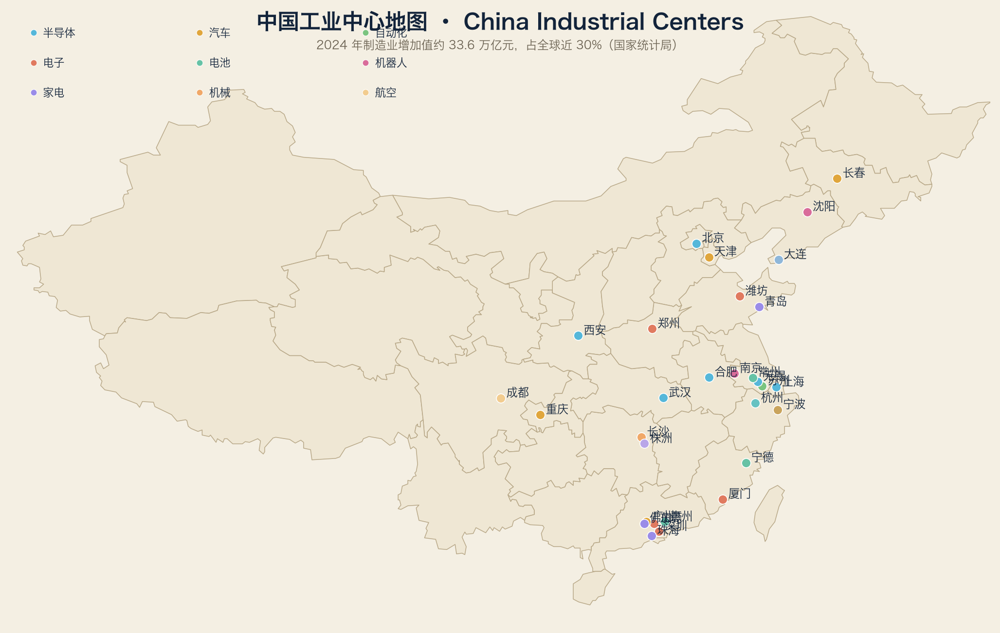

阅读方法与第一卷一致：第一级是产业，第二级是城市。
2.1 汽车与新能源汽车
一句话：全球最大汽车市场；新能源把中国从“追赶者”变成“定义者”。
数据：2024 年汽车产销均超 3100 万辆；新能源汽车产销 1288.8 万 / 1286.6 万辆，占新车销量 40.9%，连续十年全球第一。
| 城市 | 代表企业 | 定位 |
|---|---|---|
| 深圳 | 比亚迪 | 全球新能源销量第一（2024 年约 427 万辆） |
| 上海 | 特斯拉、上汽 | 特斯拉超级工厂 + 传统合资总部 |
| 广州 | 广汽、小鹏 | 华南整车带 |
| 合肥 | 蔚来、大众安徽 | 政府“押注”新势力 |
| 常州 | 理想 | 理想制造基地 |
| 西安/重庆/长春 | 比亚迪西安、长安、赛力斯、一汽 | 西部与东北整车带 |
2.2 机器人
一句话：全球最大安装市场，本土品牌份额首次超过外资。
数据：2024 年新安装 29.5 万台（占全球 54%）；本土品牌在华份额 57%（IFR）。
| 城市 | 代表企业 | 定位 |
|---|---|---|
| 深圳 | 大族、汇川、越疆、优必选 | 机器人与伺服 |
| 南京 | 埃斯顿 | 六轴工业机器人 |
| 沈阳 | 新松 | 移动机器人与产线机器人 |
| 上海 | 节卡、新时达、发那科中国 | 协作机器人与外资本地化 |
| 杭州 | 海康机器人 | 移动机器人 |
2.3 半导体
一句话：全球最大半导体消费市场，自主制造正在建“第二张地图”。
| 城市 | 代表企业 | 定位 |
|---|---|---|
| 上海 | 中芯国际、华虹 | 代工与特色工艺 |
| 北京 | 中芯北方、华卓精科、北方华创 | 设备与设计 |
| 深圳 | 华为海思、中兴微 | 设计 |
| 合肥 | 长鑫存储 | DRAM |
| 武汉 | 长江存储 | NAND Flash |
| 西安 | 三星存储、奕斯伟 | 外资存储 + 材料 |
2.4 工业自动化
一句话：PLC、伺服、视觉、DCS 都在快速国产化。
| 城市 | 代表企业 | 定位 |
|---|---|---|
| 深圳 | 汇川技术 | 伺服与变频器（2024 年营收约 370 亿元） |
| 杭州 | 海康机器人、中控技术 | 机器视觉与 DCS |
| 无锡 | 信捷电气 | PLC 与伺服 |
| 北京 | 和利时 | DCS / 轨道交通自动化 |
| 上海 | 西门子、博世、SEW 中国 | 外资本地化 |
| 苏州 | 汇川苏州、埃斯顿苏州 | 制造与研发中心 |
2.5 电子制造
一句话：全球消费电子的“总装车间”，正在向“设计+制造”转型。
| 城市 | 代表企业 | 定位 |
|---|---|---|
| 深圳 | 华为、立讯精密 | 终端与连接器 |
| 东莞 | OPPO、vivo、华为终端 | 3C 制造 |
| 郑州 | 富士康 | 苹果链总装 |
| 成都 | 富士康、京东方 | 代工与显示 |
| 潍坊 | 歌尔股份 | 声学与 VR |
| 厦门 | 戴尔中国、友达 | 电脑与显示 |
2.6 动力电池
一句话：全球动力电池一半以上在中国生产；宁德时代连续多年全球第一。
| 城市 | 代表企业 | 定位 |
|---|---|---|
| 宁德 | 宁德时代 | 全球动力电池龙头（2024 年营收约 3620 亿元） |
| 深圳 | 比亚迪（弗迪电池） | 电池 + 整车垂直整合 |
| 常州 | 中创新航 | 第三梯队头部 |
| 惠州 | 亿纬锂能 | 圆柱电池 |
| 宜宾 | 宁德时代四川基地 | 西部产能 |
2.7 光伏与新能源装备
一句话：全球光伏制造中心，从硅料到组件几乎全在中国。
| 城市 | 代表企业 | 定位 |
|---|---|---|
| 常州 | 天合光能 | 组件 |
| 无锡 | 先导智能 | 光伏设备 |
| 西安 | 隆基绿能 | 硅片与组件 |
| 嘉兴/合肥 | 晶科、通威系 | 一体化制造 |
2.8 家电
一句话：全球最大的家电制造与出口国，白电三巨头格局稳定。
| 城市 | 代表企业 | 定位 |
|---|---|---|
| 佛山 | 美的 | 全球家电营收第一集团 |
| 珠海 | 格力 | 空调 |
| 青岛 | 海尔 | 全球品牌 + 工业互联网 |
| 宁波 | 方太、奥克斯 | 厨电与空调 |
2.9 医疗器械
一句话：国产影像与器械正在从“性价比”进入高端。
| 城市 | 代表企业 | 定位 |
|---|---|---|
| 深圳 | 迈瑞医疗 | 监护、超声、IVD |
| 上海 | 联影医疗 | 高端影像（CT/MR/PET） |
| 上海 | 微创医疗 | 介入器械 |
| 苏州 | 飞利浦/西门子医疗苏州 | 外资本地化 |
2.10 航空、船舶、机床
| 产业 | 中心 | 代表企业 | 全球地位 |
|---|---|---|---|
| 航空 | 上海/西安/成都/沈阳/哈尔滨 | COMAC、成飞、西飞、沈飞、哈飞 | C919 供应链国产化推进中 |
| 船舶 | 大连/上海/青岛 | 大连造船、江南造船、外高桥造船 | 全球造船份额第一 |
| 机床 | 沈阳/大连/宁波/北京 | 沈阳机床、海天精工、创世纪 | 中低端规模第一，高端追赶 |
| 轨道交通 | 株洲/青岛/长春 | 中车株机、中车四方、长客 | 全球最大轨交装备制造国 |
2.11 读这张图的方法
1. 沿海 = 出口与外资：长三角、珠三角
2. 内陆 = 政策与成本：合肥、武汉、成都、重庆、西安
3. 东北 = 老基地转型：汽车、机床、机器人
4. 每一个产业，几乎都有一条“沿海研发 + 内陆制造”的走廊
下一章开始放大：先看长三角，再看珠三角。
词汇笔记（Vokabelnotiz）
| 中文 | Deutsch | English |
|---|---|---|
| 本土品牌 | einheimische Marken | Local brands |
| 产能过剩 | Überkapazitäten | Overcapacity |
| 走廊 | Korridor | Corridor |
| 外资本地化 | Lokalisierung | Localization |